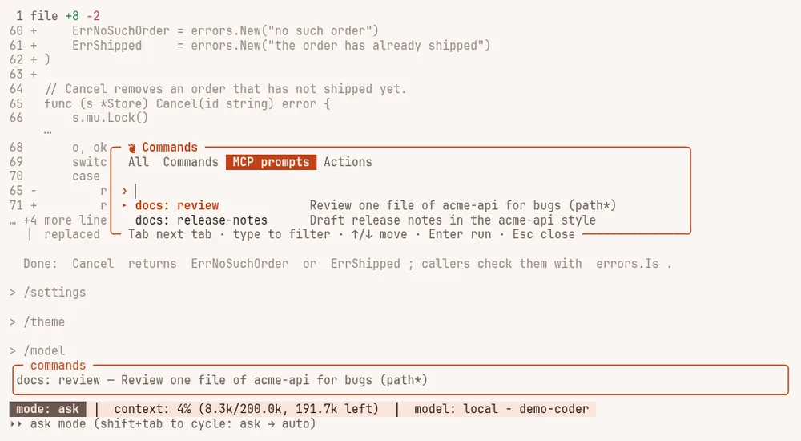
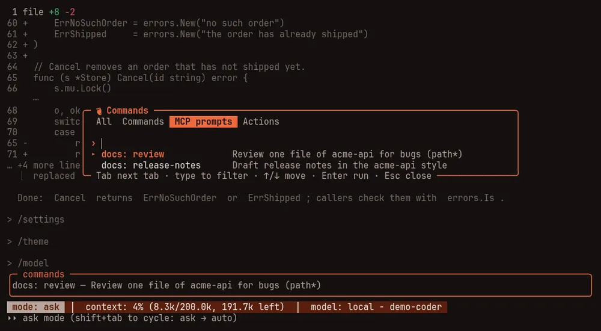
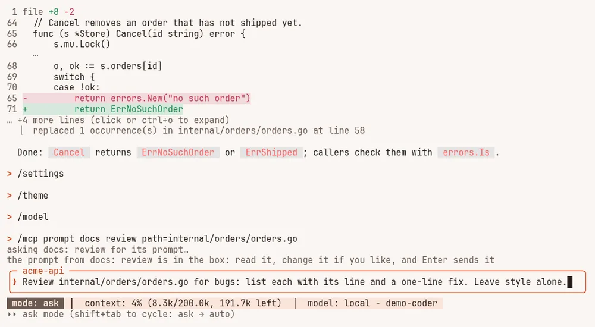
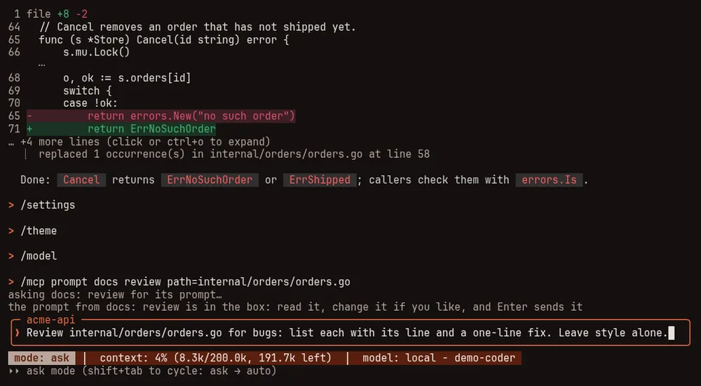

Connect other tools10 min read
Give other tools this project's knowledge #
On this page
maple-harness mcp serve lets any tool that speaks MCP (Claude Code, OpenCode, another Maple Harness) read
this project's notes and code map, the same ones the agent uses.
Build the index once from the project directory:
maple-harness graph reindexThen connect a tool. A client normally launches the server itself.
In plain words #
- What it is. Other tools (Claude Code, OpenCode, another Maple) can read this project's memory notes and code map, the ones Maple builds as it works.
- Why you want it. Each tool starts already knowing your project's structure, instead of reading it again.
- What to do.
maple-harness graph reindexonce in the project, then add the server to your tool with the line below. There is no setup page step.
Claude Code #
claude mcp add maple-knowledge -- maple-harness mcp serveor in the project's .mcp.json:
{
"mcpServers": {
"maple-knowledge": {
"command": "maple-harness",
"args": ["mcp", "serve"]
}
}
}Add "--read-only" to the arguments to withhold the tools that write notes.
OpenCode #
In opencode.json:
{
"$schema": "https://opencode.ai/config.json",
"mcp": {
"maple-knowledge": {
"type": "local",
"command": ["maple-harness", "mcp", "serve"],
"enabled": true
}
}
}Another Maple Harness #
In config.yaml:
harness:
mcp_servers:
- name: knowledge
command: maple-harness
args: ["mcp", "serve", "--project", "/path/to/other/project"]Using MCP servers from the agent #
The agent can use MCP servers too, from the harness.mcp_servers list or a project's .mcp.json. Their
tools ask for approval like any other tool. A server that runs as a program on your machine runs with your
permissions, so add only servers you trust. A server reached over the network needs https unless it is on
this machine.
A project's own .mcp.json is not something you configured yourself, so the first time one is found for a
project you have not seen before, Maple Harness asks before starting the server it names (or, without a
terminal to ask on, skips it and says so). Once approved, it starts normally; editing the file afterwards
asks again. harness.mcp_servers in your own config.yaml is unaffected — it always runs. See
maple-harness trust --help.
A server's tools are held back in plan mode, unless you mark the server read_only: true (in
/settings → MCP servers: read-only): then plan mode offers them, except a tool the server itself says is
destructive. Only your own config.yaml can mark a server; a project's config or .mcp.json cannot.
Where a local server starts #
In plain words. A server that runs as a program starts in the project's folder, as it does in other coding
agents, so a server that works on the project finds it. But a program started in a folder can pick up code from it:
npx prefers a copy of a package the folder's node_modules holds, and python -m a module the folder has. If you
give one of your own servers a secret (its environment or arguments name ${secret:…} or ${env:…}, or hold a
credential written out, such as GITHUB_TOKEN=… or --api-key=…), a project you have not
trusted could hand that secret to code it put there. So, while a project is not trusted, such a server starts from
your home folder instead, and the session says so once:
github started from your home folder because this project isn't trusted; trust it to run servers inside itTrusting the folder (answering yes when Maple asks about its files, or maple-harness trust approve in it, which
works for a folder with nothing to ask about too) puts your servers back in the project folder. Servers without a
secret, and the servers a project's own .mcp.json names, start in the project as before.
Trusting is yours to do, in your own terminal. maple-harness trust approve does not grant it when it runs under
a command Maple started (the agent's bash, a background command or monitor, a hook, an MCP server, a notification
command), or without a terminal unless you pass --yes from a script of your own; the agent's pane tools do not type
it; and a session started without a terminal, or by such a command, never asks the trust question. This keeps the
agent from trusting a project by itself in the ordinary course of its work. It is not a wall: without the sandbox,
the agent's commands run as you and could change any file you can, so keep the sandbox on for projects you do not
trust.
Technically.
- The program is found first, on your own
PATH, before the server starts anywhere: only the absolute folders in it count, so a.or a relative folder such asnode_modules/.binin yourPATHnever makes a project's copy the program. A path written with a folder (./bin/server) is taken from the folder the server starts in. cwdon a server inharness.mcp_servers(or starts in in/settings) chooses for it:homealways starts it from your home folder;projectalways starts it in the project's folder, even when the project is not trusted (the session says so each time, since a project's copy of the package would get the secret). Unset, the rule above applies.- Your own servers are the ones in
harness.mcp_serversof yourconfig.yamland in your~/.mcp.json, exactly as written there; a server of the project's.mcp.jsonor settings (even one named like yours) starts in the project. - Credential variables (
harness.mcp.scrub_credential_env, off by default). Off, every local server inherits Maple's environment as it is, as in 2.x: aGITHUB_TOKENor a cloud key in your shell reaches every server you run.onstarts each local server without the variables that hold credentials: Maple's own variables, a provider's API key, a cloud's (AWS_*,AZURE_*,GCP_*,GOOGLE_APPLICATION_*),GITHUB_*,GH_*,GITLAB_*,ANTHROPIC_*,OPENAI_*,GEMINI_*,HF_*,COPILOT_*, the SSH agent (SSH_AUTH_SOCK),DATABASE_URL, any name ending in_KEY,_PATor_DSNor withTOKEN,SECRET,PASSWORD,PASSPHRASE,CREDENTIAL,API_KEY,PRIVATE_KEY,ACCESS_KEYorAUTHin it, and a proxy address with a password in it. The plain settings under those prefixes stay (AWS_PROFILE,AWS_REGION,GH_HOST, a CI run'sGITHUB_*facts), and so does everything else (HOME,PATH,LANG, a proxy without a password…). The session names the variables it left out, once. See Credential variables for when to turn it on. - With the sandbox on, the sandbox's own environment is used, as for its commands, whatever this setting says.
- While a project is not trusted, the folders of your
PATHinside its repository (a direnvPATH_add, a projectbin, a shim pointing into it) are left out, both for finding a server's program and in its environment. Run in your home folder (or one that holds it), nothing is left out: your own tool folders are there. - What a project's server may name. A server from the project's
.mcp.jsonor settings may name in itsenv, and a remote one in its headers, only${env:NAME}for a variable that is not a credential (above), and${secret:mcp-project/<id>/NAME}, a value you keep for that project withmaple-proxy secrets set(the session's note gives the exact<id>, made from the project's folder). One that names anything else (your provider keys, Maple's own secrets, a credential variable) is not started, and the session says which reference it was. - Starting from your home folder changes only where the program starts. With the sandbox on, the project stays the folder it may write, and your home folder is not made writable.
npxcan still prefer a copy of a package installed higher up, in your home folder's ownnode_modules, and it downloads the package you name when it is not installed. For a server that holds a secret, the steadiest choice is a global install pinned to a version (npm install -g <package>@<version>, then name its program as the command), orcwd: home.
Credential variables #
In plain words. Your shell often holds keys other tools use: a GITHUB_TOKEN, cloud keys, a provider's API key,
the SSH agent. By default a local MCP server inherits them all, as in Maple 2.x, so
a server that reads GITHUB_TOKEN from its environment just works. That also means every local server you run (and
whatever package it pulls in) can read every key in your shell. Turning on harness.mcp.scrub_credential_env hands
each server only the keys you name for it, so a server you added for one job does not quietly get the keys for all
the others. Change it in /settings (Tools) or in config.yaml:
harness:
mcp:
scrub_credential_env: "on"
mcp_servers:
- name: github
command: github-mcp-server
env:
- GITHUB_TOKEN=${env:GITHUB_TOKEN} # named, so this server still gets itWhat breaks when it is on. A server that reads a credential from its environment without its entry naming it
starts without it, and usually fails to sign in or answers that it is not authorised. The session's note says which
variables it left out; name each one the server needs in its own env (NAME=${env:NAME}), or keep the value in the
secret store and name ${secret:…} instead. Nothing else changes: the program, its folder and its other variables
are the same.
Technically.
harness.mcp.scrub_credential_envisonoroff(unset is off). It applies to your local (stdio) servers when the session starts; a remote server gets only the headers its entry names either way.- The variables left out are the ones listed under Where a local server starts; a
name in a server's own
envpasses that one variable through to that server only. - A project's own config (
.mapleharness/config) cannot setharness.mcp: only your ownconfig.yamlcan. - Independent of this setting, and always: a project's servers may name only non-credential variables and
${secret:mcp-project/<id>/…}values; while a project is not trusted,PATHfolders inside its repository are left out; your own servers given a secret start from your home folder in a project you have not trusted. - Without the sandbox a server runs as you and could still find keys elsewhere on your machine (files, the keyring): this keeps them from being handed to it, it does not wall them off.
Prompts a server offers #
Some MCP servers offer ready-made prompts as well as tools ("review this file", "summarise the open issues"). They
are a tab of the command palette, MCP prompts (Ctrl+P, then Tab), one row per prompt, named
server: prompt, with its arguments (a * marks the ones it needs).
- Picking one puts
/mcp prompt <server> <prompt>in the message box. Add the arguments asname=value(quote a value with spaces:path="docs/my notes.md") and send it. - Only then is the prompt fetched from the server, into the message box (after anything you had typed there), so
you read it first. Change it if you like;
Entersends it as your message. Nothing a server wrote is sent without you sending it. - A missing argument the prompt needs is said before anything is fetched. Parts of a prompt that are not text (pictures, files) are left out, with a note saying so; a prompt larger than 64 KB is refused.


Ctrl+P, Tab to MCP prompts: each server's prompts, with the arguments they need.

The list is read when the session starts and again after a /mcp command, giving each server three seconds.
Servers that ask you to sign in #
Some hosted MCP servers (Atlassian's, for example) ask you to sign in with your account instead of taking a fixed token. Maple Harness signs in to them the way Claude Code does: through your browser.
- When you start Maple Harness in a terminal, it asks right away, naming the server's address and where it is
configured: "The MCP server atlassian (mcp.atlassian.com, from your own configuration) wants you to sign in.
Sign in now in your browser? [Y/n]". Say yes and approve in the browser (it waits up to three minutes), and the
session starts with that server's tools;
nstarts without it. For a server from the project's own.mcp.jsonthe answer defaults to no ([y/N]): typeyto sign in. - A server that needs a sign-in never stops the session. Without a terminal (
--prompt, a script), or when you say not now, it starts without that server, with a note naming the command that signs in, and/mcplists it as not connected. /mcp login <server>(ormaple-harness mcp login <server>in a terminal) opens the server's sign-in page in your browser, or shows its address to open. Once you approve, the server's tools are there from your next message.- The sign-in is kept in Maple's secret store (the system keyring, or its encrypted file) and renewed on its own,
so later sessions connect without asking. It is never written to a config file, and a project's
.mcp.jsoncannot read it. /mcp logout <server>(ormaple-harness mcp logout <server>) forgets it.
A server that takes a fixed token instead can be given one in its headers in .mcp.json, for example
"Authorization": "Bearer ${MY_TOKEN}".
Sign-in works with servers that support MCP's authorization (sign-in discovery and automatic client registration),
over the Streamable HTTP transport. A server that wants an app registered beforehand takes it as Claude Code reads it,
in .mcp.json: "oauth": {"clientId": "your-app-id", "callbackPort": 8765} (the port only when the app's return
address must match exactly). Tested against a local test server only; a real hosted server
(Atlassian's) has not been tried yet.
The project is the directory the server is launched in, or --project DIR.
See also #
- Harness settings: Tools, skills and hooks The MCP servers the agent itself uses.
- Drive it from another program Sessions as JSON for scripts, editors and other tools.
- MCP hub Your MCP servers run once, at one address, with sign-in and access lists.
- Search by meaning A small model on your machine that finds things by what they mean.